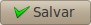
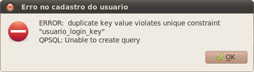

Cadastro de Usuario¶
Nesta tela o usuario pode cadastrar outros usuarios do sistema, além de fazer a manutenção dos outros usuarios. Manutenção significa que o usuario vai conseguir fazer as seguintes operações:
- Cadastrar um novo usuario;
- Alterar dados dos usuarios já cadastrados, exceto a senha;
- Alterar o status do usuario de ativo para inativo (e vice-versa), isso equivale a demitir o usuario;
Cadastrando um novo usuario¶
Para cadastrar um novo usuario, usuario é um funcionario da empresa que vai interagir com todo o software, primeiro você deve clicar no botão novo,
isso irá ativar os botões salvar,
cancelar e

criar uma nova linha na tabela.
Agora preencha os campos,
depois clique no botão salvar,
se a operação foi bem sucedida, você verá uma mensagem como esta,
aparecerá na linha que estava vazia, o novo usuario.
Atualizando os dados do usuario¶
Para atualizar os dados dos usuarios cadastrados, você deve clicar no usuario que deseja alterar os dados,

os campos irão ser preenchidos automaticamente, com os dados do usuario que você clicou,
agora altere os dados do usuario, você pode alterar todos os dados menos a senha,
depois clique no botão salvar,
se a operação foi bem sucedida, você verá uma mensagem como esta,
aparecerá na linha que estava o usuario, seus novos dados.
Bloqueando e Desbloqueando usuarios¶
Para bloquear o acesso do usuario ao sistema você deverá, atualizar o status do mesmo para inativo,
para desbloquear o acesso do usuario ao sistema você deverá, atualizar o status do mesmo para ativo,
Mensagens de erro¶
Estas são a mensagens de erro que o sistema pode lhe retornar,
Você pode ter esquecido de preencher todos os campos.
O e-mail informado no campo Email não é um e-mail valido.
Os dados digitados no campo Senha, não são iguais aos dados digitados no campo Confirmação.
Esta ultima mensagem de erro ocorre quando, o login ou o nome do usuario ja existem.